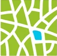
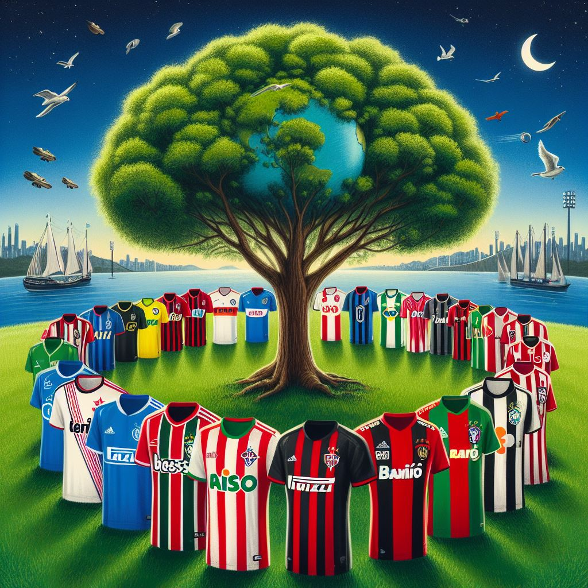

Combata as
mudanças
climáticas e
construa um
futuro mais ver
com a gente
Nossos números
4123 árvores plantadas
Recuperação de 5.000 hectares
Projetos da floresta
Com o objetivo de promover um estilo de vida mais sustentável e benéficio para o meio ambiente e para a saúde individual, a iniciativa "Vida Mais Verde e Saudável" na Floresta tem feito a diferença na vida de muitos.
FLORESTA com parceria com o Campeonato brasileiro
Celebre cada gol com a natureza! No Campeonato Brasileiro, não são apenas os torcedores que comemoram - o planeta também. A cada gol marcado, duas árvores são plantadas, trazendo mais verde para o nosso mundo e marcando um verdadeiro gol pela sustentabilidade. Junte-se a nós nessa partida pelo futuro do planeta. Marque esse gol pela vida!
Reflorestamento e recuperação

Cerrado Sustentável: Recuperação de 5.000 hectares de áreas degradadas no Cerrado com a implementação de sistemas agroflorestais e agricultura sustentável.
Depoimentos
Aqui estão alguns depoimentos de algumas pessoas que tiveram suas vidas mudas por conta floresta, que esta mudando aos poucos a sua qualidade de vida e juntos vamos regenerar o planeta
Dona Maria - aposentada
“A floresta era nosso lar, nossa fonte de vida. Mas, com o tempo, vimos a devastação tomar conta. As árvores caíam, os animais desapareciam...Vocês da floresta chegaram com esperança e trabalho duro. Plantaram árvores, ensinaram novas técnicas de agricultura, e nos mostraram que era possível viver em harmonia com a natureza. Hoje, nossa comunidade está renascendo.”
João Gomes - Agricultor
“Sempre trabalhei da mesma forma, usando métodos tradicionais. Mas, com o tempo, a terra começou a se esgotar, e a produção caiu drasticamente. Foi quando A Floresta me apresentou à agricultura sustentável. Aprendi novas técnicas, como a permacultura e a agroecologia, que me permitiram recuperar a saúde da terra e aumentar a produtividade.”
Antonella - Estudante
“Eu sempre me interessei por questões ambientais. Mas, muitas vezes, me sentia impotente diante da enormidade dos desafios que enfrentamos. Foi quando participei de um programa educativo da A Floresta. Aprendi sobre a importância da preservação ambiental, e como cada um de nós pode fazer a diferença.”
Epaminondas-Cientista
"Sou cientista e trabalho com pesquisa e desenvolvimento de tecnologias para a agricultura e a gestão ambiental. Acredito que a tecnologia é uma ferramenta poderosa para combater as mudanças climáticas e promover a sustentabilidade. A Floresta é um parceiro fundamental nesse processo.”
Carlos- Desempregado
"Sou um cidadão comum que sempre se preocupou com o meio ambiente. Mas, muitas vezes, me sentia perdido e sem saber como contribuir para a preservação da natureza. Foi quando conheci A Floresta. A organização me mostrou que existem muitas maneiras de fazer a diferença, desde pequenas ações no dia a dia até o engajamento em projetos mais abrangentes.”